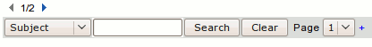

| The search toolbar allows you to search the messages in the current folder.

Using this toolbar is actually quite simple. The Double Left Arrow (
 ) will jump to the absolute first page of messages in the current folder. See
Display Preferences
to change the number of messages that are displayed per page. ) will jump to the absolute first page of messages in the current folder. See
Display Preferences
to change the number of messages that are displayed per page.
The Left Arrow (
 ) will jump to the previous page of messages. ) will jump to the previous page of messages.
The text field "1", tells you the current page of the total number of pages. You can change this to jump to any page of messages in the folder. For example, if it said "[Page 2 of 7]", you could type in "5" in place of "2", and jump to page five.
The Right Arrow, and Double Right Arrow do exactly opposite of the Left Arrows.
You can search the messages in the current folder by simply typing in the search query in the text field next to "Search", and selecting the criteria to search in. You can search the who the letter is From, who it was To, the Subject, the Date, the Attachment Filename, All of the Above (Header), the Content of the message, or All of the Above (All). Once you have selected all of your search criteria, click the "Search" button, or hit "Enter" on the keyboard.
This toolbar is for basic message searching and browsing within the current mailbox or folder. There is an advanced search toolbar for more detailed searches. Please see
Advanced Message Search
to learn how to perform for specific search queries. |